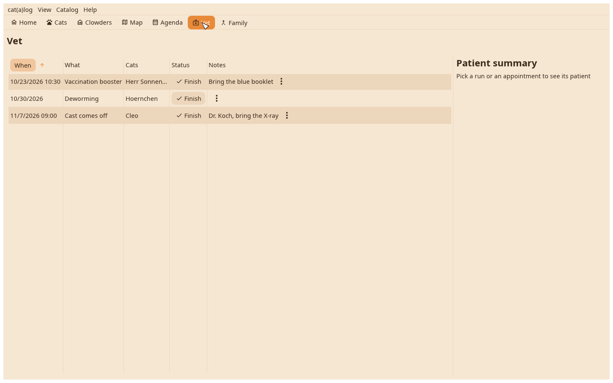
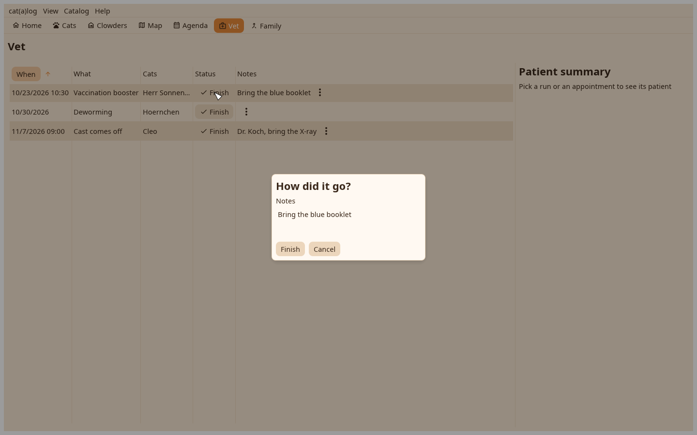

1. The Vet view
The runs and appointments across all cats, open first; a click shows the patient sheet.

2. Finish
Finish asks which cats were treated and can write a value into a field, the vaccination date for one. The untreated stay planned.
